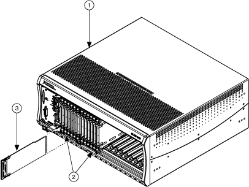

您可以将多个相邻 NI SwitchBlock 载体的模拟总线与 NI SwitchBlock 的 NI 2806 扩展桥连接起来。
|
注意 如果您使用扩展桥连接多个运营商，则在系统加载所有连接运营商的驱动程序之前，您无法连接到任何已连接运营商上的模拟总线。这可以防止模拟总线上的通道之间出现意外短路。您仍然可以使用niSwitch Relay Control VI 或niSwitch_RelayControl函数直接操作继电器，但存在模拟总线短路的风险。 |
下图显示了 NI 2806 扩展桥的插入位置。
|  | ||||||||
|
如果已连接多个相邻运营商的模拟总线，您可以使用模拟总线共享启用属性或NISWITCH_ATTR_ANALOG_BUS_SHARING_ENABLE属性使两个运营商中的设备同时连接到同一条模拟总线线路。
|
注意 NI 建议使用 NI Switch Executive 来操作系统包含多个载波的系统。NI Switch Executive 帮助包含有关使用 NI Switch Executive 创建跨多个运营商的虚拟设备的信息。 |
 提交有关此主题的反馈。
提交有关此主题的反馈。 访问ni.com/support以获得技术支持。
访问ni.com/support以获得技术支持。